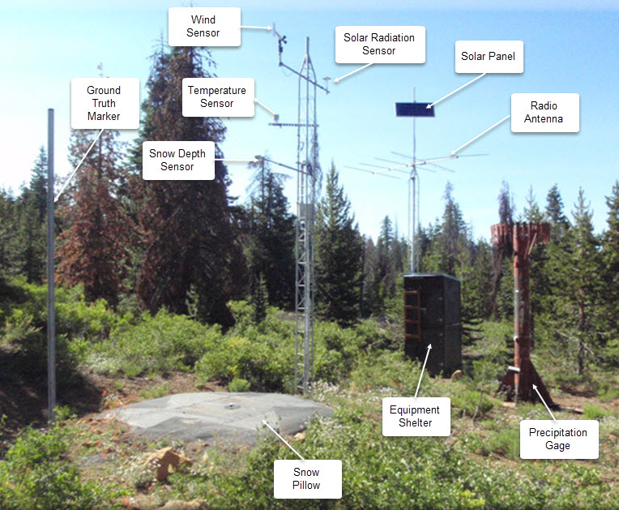

Machine learning applications#
This week we will develop machine learning models for two common supervised learning tasks in Earth Science:
Image classification
Time-series prediction
Initially, we will approach these tasks by converting the image pixels and time-series data into structured datasets (i.e. organized into a table with rows and columns). This means that we will be considering each pixel or data point to be an independent observation. This assumption will allow us to apply conventional machine learning algorithms (e.g. Random Forests) and get some decent results.
However, we will discover that there probably are spatial dependencies in the image pixels and temporal dependencies in the time-series data. So, in the second part of the lecture, we will introduce another class of machine learning algorithms called neural networks which are extremely flexible and can be designed to exploit these dependencies for better predictions.
Image classification#
The data we will be using is a SkySat image over the western Greenland Ice Sheet acquired in June 2019. The SkySat-C constellation which consists of nineteen SmallSats (110 kg) launched between 2016 and 2020 and operated by Planet (formerly Planet Labs, Inc). Each SkySat satellite has a multispectral camera that can acquire imagery with four bands (i.e. blue, green, red, and NIR) with a spatial resolution of <1 m.
{kind=link}
Read data#
Let’s open a single band from the image using the read() function and have a look at it.
Note
Bands are indexed from 1 due to a GDAL convention.
# Import packages
import matplotlib.pyplot as plt
import matplotlib.dates as mdates
import rasterio
import numpy as np
# Open raster
src = rasterio.open('data/20190619_175047_ssc10d1_0023_pansharpened.tif')
# Read band
band_4 = src.read(4)
# Plot band
fig, ax = plt.subplots(figsize=(10,6))
im = ax.imshow(band_1, cmap='gray')
plt.show()
---------------------------------------------------------------------------
NameError Traceback (most recent call last)
Cell In[1], line 15
13 # Plot band
14 fig, ax = plt.subplots(figsize=(10,6))
---> 15 im = ax.imshow(band_1, cmap='gray')
16 plt.show()
NameError: name 'band_1' is not defined
print(src.count)
4
True color SkySat image#
We notice that our image has a count of 4 which means that our image has 4 different bands, each of which represent the reflectance in a specific wavelength. Since our SkySat data contains multiple bands, we can visualize a “true color” image that combines the red, green, and blue bands to make an image similar to what the human eye would observe.
To do this, we will read the other two bands, stack them, and pass this 3-band array to imshow.
# Read other bands
band_1 = src.read(1)
band_2 = src.read(2)
band_3 = src.read(3)
# Produce a new array by stacking the RGB bands
rgb = np.dstack((band_3, band_2, band_1))
# Plot as RGB image
fig, ax = plt.subplots(figsize=(10,6))
im = ax.imshow(rgb)
plt.show()
Import training dataset#
The training dataset for this supervised classification task was digitized using QGIS. To construct the training dataset, we drew polygons around pixels that represented specific land cover classes using QGIS. We then sampled pixel values beneath the polygons and converted these values into a table.
Important
Each row in the training data represents a single pixel.
# Import packages
import pandas as pd
# Import training dataset
training_data = pd.read_csv('data/training-dataset.csv')
training_data.head()
| band1 | band2 | band3 | band4 | labels | |
|---|---|---|---|---|---|
| 0 | 175 | 175 | 175 | 175 | 1 |
| 1 | 176 | 176 | 176 | 176 | 1 |
| 2 | 177 | 177 | 177 | 177 | 1 |
| 3 | 180 | 180 | 180 | 180 | 1 |
| 4 | 178 | 178 | 178 | 178 | 1 |
Explore training dataset#
The first goal of any machine learning task should be develop some intuition about our training data. The following information will be very useful:
# Number of classes
training_data['labels'].unique()
array([1, 2])
Note
These numeric values correspond to the following classes.
# Define class labels
class_labels = ['ice', 'water']
# The number of samples and their data type
training_data.info()
<class 'pandas.core.frame.DataFrame'>
RangeIndex: 18184 entries, 0 to 18183
Data columns (total 5 columns):
# Column Non-Null Count Dtype
--- ------ -------------- -----
0 band1 18184 non-null int64
1 band2 18184 non-null int64
2 band3 18184 non-null int64
3 band4 18184 non-null int64
4 labels 18184 non-null int64
dtypes: int64(5)
memory usage: 710.4 KB
# The number of samples in each class
training_data["labels"].value_counts()
labels
1 11948
2 6236
Name: count, dtype: int64
# Mean value of each predictor by class
training_data.groupby('labels').mean()
| band1 | band2 | band3 | band4 | |
|---|---|---|---|---|
| labels | ||||
| 1 | 135.788919 | 135.788919 | 135.788919 | 135.788919 |
| 2 | 50.293137 | 50.293137 | 50.293137 | 50.293137 |
# Statistics for each feature
training_data.describe()
| band1 | band2 | band3 | band4 | labels | |
|---|---|---|---|---|---|
| count | 18184.000000 | 18184.000000 | 18184.000000 | 18184.000000 | 18184.000000 |
| mean | 106.469094 | 106.469094 | 106.469094 | 106.469094 | 1.342939 |
| std | 56.379966 | 56.379966 | 56.379966 | 56.379966 | 0.474704 |
| min | 2.000000 | 2.000000 | 2.000000 | 2.000000 | 1.000000 |
| 25% | 68.000000 | 68.000000 | 68.000000 | 68.000000 | 1.000000 |
| 50% | 111.000000 | 111.000000 | 111.000000 | 111.000000 | 1.000000 |
| 75% | 153.000000 | 153.000000 | 153.000000 | 153.000000 | 2.000000 |
| max | 206.000000 | 206.000000 | 206.000000 | 206.000000 | 2.000000 |
Scale features#
Even if it might not that much for some classifiers, it’s good practice to scale our features.
from sklearn.preprocessing import StandardScaler
# Define feature list
feature_list = ['band1', 'band2', 'band3', 'band4']
# Define features and labels
X = training_data[feature_list]
y = training_data['labels']
# Standarize data
scaler = StandardScaler()
X_scaled = scaler.fit_transform(X)
X_scaled = pd.DataFrame(X_scaled, columns=feature_list)
X_scaled.describe()
| band1 | band2 | band3 | band4 | |
|---|---|---|---|---|
| count | 1.818400e+04 | 1.818400e+04 | 1.818400e+04 | 1.818400e+04 |
| mean | -2.500810e-17 | -2.500810e-17 | -2.500810e-17 | -2.500810e-17 |
| std | 1.000027e+00 | 1.000027e+00 | 1.000027e+00 | 1.000027e+00 |
| min | -1.852998e+00 | -1.852998e+00 | -1.852998e+00 | -1.852998e+00 |
| 25% | -6.823373e-01 | -6.823373e-01 | -6.823373e-01 | -6.823373e-01 |
| 50% | 8.036597e-02 | 8.036597e-02 | 8.036597e-02 | 8.036597e-02 |
| 75% | 8.253319e-01 | 8.253319e-01 | 8.253319e-01 | 8.253319e-01 |
| max | 1.765408e+00 | 1.765408e+00 | 1.765408e+00 | 1.765408e+00 |
Fit model#
Now that our training data is scaled, we can fit our classifier. We will start with a RandomForestClassifier and use “out-of-bag” scoring to evaluate the model’s performance on unseen data without requiring us to generate a separate validation dataset.
from sklearn.ensemble import RandomForestClassifier
# Define model
bclf = RandomForestClassifier(n_estimators=100, oob_score=True)
# Fit
bclf.fit(X_scaled, y)
#Print score
print(bclf.oob_score_)
0.9031016278046634
Evaluate#
We can predict the class probabilities for the “out-of-bag” samples using the oob_decision_function_. Once we have those predictions, we can compare them to the actual class values and generate a confusion matrix.
from sklearn.metrics import confusion_matrix, ConfusionMatrixDisplay
# OOB predictions
y_pred = bclf.oob_decision_function_.argmax(axis=1) + 1
# Generate confusion matrix
cm = confusion_matrix(y, y_pred, labels=bclf.classes_)
# Plot
disp = ConfusionMatrixDisplay(confusion_matrix=cm, display_labels=class_labels)
disp.plot(cmap=plt.cm.Blues)
plt.show()
Confusion matrix#
There is a lot of information that can be understood from a confusion matrix, even though it only contains four numbers for a binary classification.
The in-diagonal numbers are correct predictions while off-diagonal numbers are mispredictions. Since we are interested in the amount of water in the satellite image, we will consider water to be positive and ice to be negative.
the top left corner therefore represents true negative (TN) that correspond ice pixels correctly classified as ice by the classifer.
the bottom right corner represents true positives (TP) that correspond water pixels correctly classified as water by the classifer.
the top right corner represents false positives (FP), corresponding to ice pixels that what incorrectly classified as water.
the bottom left corner are false negatives (FN), corresponding to the water pixels that were incorrectly classified as ice.
Once we have split this information, we can compute metrics to investigate the generalization performance of our classifier in a particular setting. For instance, if our goal is to estimate the amount of water in the image, we might prefer to provide a lower-bound so we make statements such as “waters covers at least X% of the ice sheet”. This statement is a stronger scientific argument than “water covers up to X% of the ice sheet” which implies that it could also cover 0%.
The former metric, known as the precision, is defined as TP / (TP + FP) and represents how likely our classifier predicted water when it actually was.
from sklearn.metrics import precision_score
precision = precision_score(y, y_pred)
print(f"Precision: {precision:.2f}")
Precision: 0.88
The other metic, known as the recall, defined as TP / (TP + FN) assesses how well our classifier was able to find all relevant instances of water.
from sklearn.metrics import recall_score
recall = recall_score(y, y_pred)
print(f"Recall: {recall:.2f}")
Recall: 0.98
The higher recall signifies that our classifier is good at finding all the water pixels, but the lower precisions indicates that it is incorrectly classifying a lot of ice pixels as water. Hence our classifier is probably providing an upper-bound on water coverage which is not really what we want.
The best way to improve the precision in this case would be to update our training dataset, perhaps providing more edge cases of ice.
Classify whole image#
Since this is just a demonstration, we will keep moving towards the goal of our analysis which is to classify every pixel in our SkySat image so that we can compute the total water coverage.
# Convert 2D array to dictionary
band_data = {f"band_{b}": src.read(b).ravel() for b in range(1, src.count + 1)}
# Format as DataFrame
df = pd.DataFrame(band_data)
# Scale
X_scaled = scaler.fit_transform(df)
X_scaled = pd.DataFrame(X_scaled, columns=feature_list)
# Predict
y_pred = bclf.predict(X_scaled)
# Add predicted labels as column
df['labels'] = y_pred
# Set labels to zero where values in band 1 are equal to zero
df.loc[df['band_1'] == 0, 'labels'] = 0
# Reshape back to original size
y_pred_2d = df['labels'].values.reshape(src.shape)
# Plot the classified image
plt.figure(figsize=(10, 6))
im = plt.imshow(y_pred_2d, vmin=0, vmax=2)
plt.show()
# Calculate water coverage
water_coverage = np.sum(y_pred_2d == 2) / np.sum(y_pred_2d > 0)
print(f"Water coverage is {water_coverage*100:.2f} %")
Water coverage is 16.31 %
River discharge prediction#
Our next example is a regression task to predict river discharge from climate data. We have nine years of discharge data from the Nisqually River, WA which is glacier-fed river that drains the southern slope of Mount Rainier.
{kind=link}
We also have climate data from an automated Snow Telemetry (SNOTEL) monitoring site at Paradise. Our goal is to develop a model that learns to predict discharge from climate data. This could be useful if our discharge monitoring station was destroyed by a forest fire or flood. So we will train the model on paired climate-discharge data for 2013-2020 period, and test the model’s ability to predict discharge for 2021.
{kind=link}
# Read data
df = pd.read_csv('data/nisqually.csv', parse_dates=['Date'], index_col=['Date'])
df.head()
| Precipitation Increment (in) | Air Temperature Average (degF) | Air Temperature Minimum (degF) | Air Temperature Maximum (degF) | Soil Moisture Percent -2in (pct) Start of Day Values | Soil Moisture Percent -4in (pct) Start of Day Values | Soil Moisture Percent -8in (pct) Start of Day Values | Soil Moisture Percent -20in (pct) Start of Day Values | Snow Water Equivalent (in) Start of Day Values | Nisqually Discharge | |
|---|---|---|---|---|---|---|---|---|---|---|
| Date | ||||||||||
| 2013-01-01 | 0.0 | 30.0 | 21.0 | 36.0 | 26.2 | 25.0 | 34.0 | 34.9 | 34.9 | 424.0 |
| 2013-01-02 | 0.0 | 34.0 | 29.0 | 47.0 | 26.4 | 24.9 | 33.9 | 34.9 | 34.9 | 413.0 |
| 2013-01-03 | 0.1 | 35.0 | 31.0 | 46.0 | 26.2 | 25.1 | 34.0 | 35.0 | 35.0 | 404.0 |
| 2013-01-04 | 0.3 | 33.0 | 32.0 | 38.0 | 26.0 | 24.9 | 34.0 | 34.9 | 35.5 | 423.0 |
| 2013-01-05 | 0.4 | 33.0 | 28.0 | 39.0 | 26.1 | 24.7 | 34.0 | 34.9 | 35.8 | 426.0 |
Explore training dataset#
# Plot 2012-2021
df.plot(y='Nisqually Discharge', kind ='line', figsize=(10,3), ylabel='Discharge (cfs)', \
xlabel="", color='blue')
<Axes: ylabel='Discharge (cfs)'>
df.info()
<class 'pandas.core.frame.DataFrame'>
DatetimeIndex: 3287 entries, 2013-01-01 to 2021-12-31
Data columns (total 10 columns):
# Column Non-Null Count Dtype
--- ------ -------------- -----
0 Precipitation Increment (in) 3287 non-null float64
1 Air Temperature Average (degF) 3287 non-null float64
2 Air Temperature Minimum (degF) 3287 non-null float64
3 Air Temperature Maximum (degF) 3287 non-null float64
4 Soil Moisture Percent -2in (pct) Start of Day Values 3287 non-null float64
5 Soil Moisture Percent -4in (pct) Start of Day Values 3287 non-null float64
6 Soil Moisture Percent -8in (pct) Start of Day Values 3287 non-null float64
7 Soil Moisture Percent -20in (pct) Start of Day Values 3287 non-null float64
8 Snow Water Equivalent (in) Start of Day Values 3287 non-null float64
9 Nisqually Discharge 3287 non-null float64
dtypes: float64(10)
memory usage: 282.5 KB
# Compute correlation matrix
corr_matrix = df.corr()
# Display just house value correlations
corr_matrix["Nisqually Discharge"].sort_values(ascending= False)
Nisqually Discharge 1.000000
Precipitation Increment (in) 0.373453
Soil Moisture Percent -2in (pct) Start of Day Values 0.336094
Soil Moisture Percent -4in (pct) Start of Day Values 0.313913
Soil Moisture Percent -8in (pct) Start of Day Values 0.267208
Soil Moisture Percent -20in (pct) Start of Day Values 0.253598
Snow Water Equivalent (in) Start of Day Values 0.237221
Air Temperature Minimum (degF) -0.097973
Air Temperature Average (degF) -0.108051
Air Temperature Maximum (degF) -0.129813
Name: Nisqually Discharge, dtype: float64
# Define start and end
start = '2021-01-01'
end = '2021-12-31'
# Define feature list
feature_list = df.columns.to_list()[:-1]
Scale features#
X = df[feature_list]
y = df['Nisqually Discharge']
# Standarize data
scaler = StandardScaler()
X_scaled = scaler.fit_transform(X)
X_scaled = pd.DataFrame(X_scaled, columns=X.columns)
X_scaled.index = X.index
Split training and testing data#
# Split data
X_train = X_scaled[:start]
X_test = X_scaled[start:end]
y_train = y[:start]
y_test = y[start:end]
Fit model#
from sklearn.ensemble import HistGradientBoostingRegressor
# Define model
model = HistGradientBoostingRegressor(max_iter=100)
# Fit model
model.fit(X_train, y_train)
# Predict test labels predictions
predictions = model.predict(X_test)
# Compute Nash–Sutcliffe efficiency (NSE)
nse = 1 - np.sum((y_test - predictions) ** 2) / np.sum((y_test - np.mean(y_test)) ** 2)
print(f"NSE: {nse:.2f}")
NSE: 0.56
Plot#
# Plot
fig, ax = plt.subplots(figsize=(10, 4))
ax.plot(df['2021-01-01':'2021-12-31'].index, df['Nisqually Discharge']['2021-01-01':'2021-12-31'], lw=2, zorder=3)
ax.plot(y_test.index, predictions, lw=2, zorder=3)
ax.set_ylabel('Predicted discharge (cfs)', fontsize=12)
ax.tick_params(axis='both', which='major', labelsize=12)
ax.grid(ls='dashed', lw=1, zorder=1)
ax.xaxis.set_major_formatter(mdates.DateFormatter('%b\n%d'))
We notice that the predicted discharge captures general patterns from high to low to high again. But it’s missing peaks in the discharge and it’s a also a little jagged, likely because it treats observations as independent. We are approaching the limits of conventional machine learning algorithms which cannot explicitly model temporal dependencies. For that, we need a different approach: neural networks.